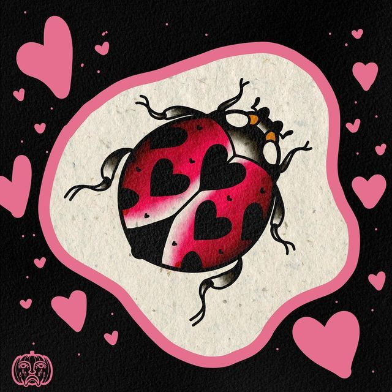

Source: Ximena Elijah Åhr via pinterest
Hi thanks for visiting my website! My name is Heidi and I am an incoming freshman college student. As a student, I would like to present all my achievements across different disciplines to friends, family, and professionals on this website to give all an opportunity to visualize my skills and capabilities in the technological world. In 2026, I dedicated a year to learning the basics of computer programming which are essential in expanding my outreach and skills especially today. A couple of programming languages I learned this year was HTML, CSS, and JavaScript. This website is a hallmark of my abilities to adapt and utilize my talents in other subjects in computer science. Beyond computer programming, I also have a keen passion for community service and STEM and hope to pursue a career in pathology. I also love goldfish keeping, fabric arts, reading, discovering local eats in LA, and sourcing secondhand clothes. I also love music and sharing some with my friends. Thank you for reading all about me and learning more about my academic and personal features!!